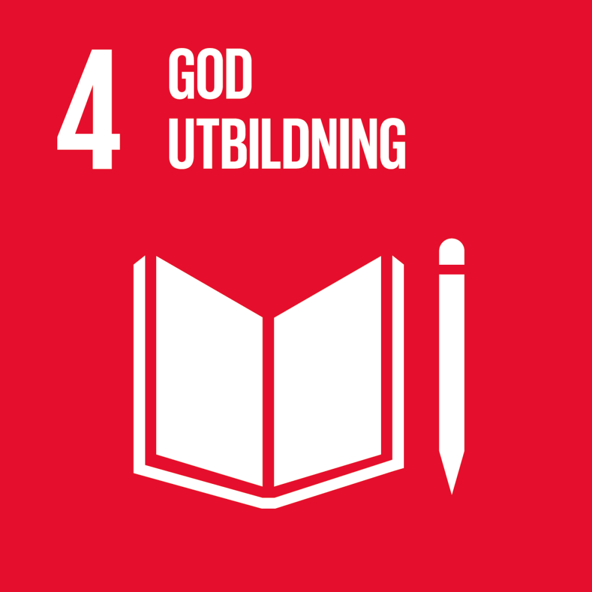
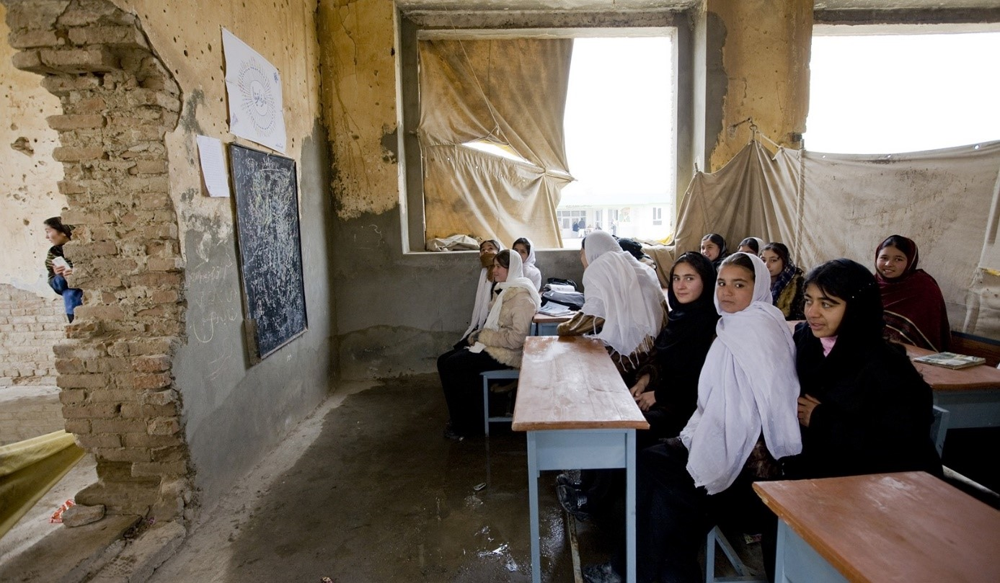
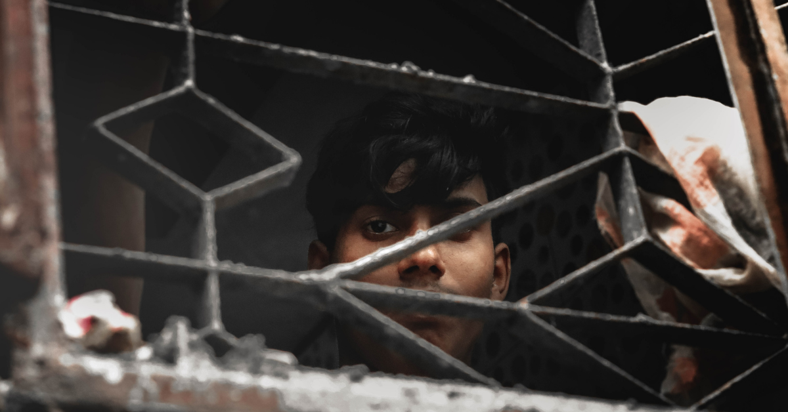
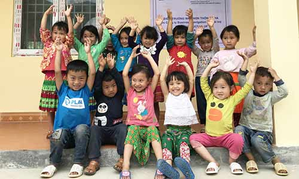

God utbildning och alla barns rätt att gå i skolan
I Sverige är det en självklarhet att alla barn ska ha tillgång till obligatorisk utbildning upp till gymnasiet, men så ser inte situationen ut för alla barn i världen. Genom att bli informerad om hur utbildning är en rättighet och om hur du kan vara delaktig i att förändra och förbättra barns rätt till en god utbildning, kan vi tillsammans bidra till en förändring.
Globala målen
De globala målen är 17 mål framtagna av FN för att främja en hållbar utveckling i världen. Innan 2030 vill FN uppnå fyra saker; att avskaffa extrem fattigdom, att minska ojämlikheter och orättvisor i världen, att främja fred och rättvisa och att lösa klimatkrisen. Detta genom de globala målen.
Mål 4 av 17 inriktar sig på en god utbildning för alla och framhäver hur skolan är en mänsklig rättighet och grunden för ett fungerande samhälle. Målet med en god utbildning är att “säkerställa en inkluderande och likvärdig utbildning av god kvalitet och främja livslångt lärande för alla”.

Varför kan inte alla barn gå i skolan?

Sedan talibanerna återtog makten i Afghanistan 2021 har rätten till utbildning begränsats för flickor och kvinnor. Deras styrande har ökat analfabetismen, som redan innan var hög, och ⅔ av befolkningen kan inte läsa eller skriva. Detta innebär att den allmänna välfärden i Afghanistan kommer drastiskt försämras och en stor del av befolkningen kommer inte att vara behörig för att kunna arbeta.
Över 258 miljoner barn i världen har inte tillgång till att gå i skolan, varav ⅔ är flickor. Några av de mest påverkade länderna omfattar bland annat Afghanistan, Sudan och Somalia där risknivån ligger på extrem, enligt Rädda Barnen.
Många faktorer hindrar barn från att gå i skolan, främst fattigdom. Vissa familjer saknar inkomst för att kunna försörja ens barns skolgång. Pengabrist kan hindra familjen från att köpa skolmaterial eller ge barnet tillgång till transport till skolan. En annan faktor är att många barn lever i otrygga miljöer. Naturkatastrofer, krig och förtryck, speciellt mot kvinnor, motverkar barn från att gå i skolan då de inte har tillgången eller möjligheten till att utbildas.
Konsekvenser av att inte gå i skolan

*Människohandel, också kallad trafficking, är en modern form av slaveri som utgörs av handel och utnyttjande av andra människor för egen vinning. Genom tvång, vilseledande och hot kan en människa tvingas arbeta, genomföra sexuella tjänster eller begå brott(Jämstäldighetsmyndigheten, 2024)
Barn som inte har en tillgång till skolan riskerar istället att utnyttjas, exempelvis genom barnarbete, barnäktenskap eller människohandel*. 160 miljoner barn är involverade i någon form av ofrivillig barnarbete runtom i världen, 12 miljoner flickor blir barnbrudar varje år och ⅓ människohandel offer är barn, varav de flesta offrena är flickor.
Skolan stödjer inte bara kunskap utan också hjälper till att skydda barn från att hamna i dåliga kretsar och att utnyttjas för tjänster. När barn inte går i skolan kan de istället tvingas arbeta i farliga fabriker, flickor gifts bort till äldre män för att försörja sin familj och riskerar att bli gravida unga och många barn sätts i fara för att säljas bort och användas mot deras vilja genom trafficking.
Även livet som vuxen utan utbildning försvårar möjligheten att veta sina rättigheter vilket innebär att de ofta utsätts för ett dåligt arbetsliv i samband med dåliga arbetsvillkor och arbetsmiljö. Många hamnar även i arbetslöshet, som leder till fattigdom och försämrade livsomständigheter. Tillgången till utbildning kan leda till att barn har enklare att ta sig ur fattigdom och landet kan utvecklas snabbare, vilket innebär att både individ och samhälle drar nytta av skolan.
Vad är syftet med mitt arbete?

Mitt namn är Maja Mladenovic och jag är en elev i årskurs 2 på Drottning Blanka skolan i Skövde. I vår kurs Samhällskunskap 2 ska vi skapa en kampanj med syfte att sprida information om någon av de Globala Målen, vilket man kan läsa mer om på deras hemsida här, och även sätta ett personligt mål för sig själv i samband med sin kampanj.
Syftet med detta projekt är att sprida information om utbildning runtom i världen och upplysa om barns grundläggande rättigheter. Jag har även valt att starta en insamling som riktas till att stödja och förbättra skolgången för barn runtom i världen, då jag anser det som det mest effektiva sättet att bidra till att motverka problemet. Alla pengar som samlas in går till UNICEFs insamling för barns rätt till utbildning, som bidrar till att ge barn skolmaterial och hjälpmedel som förenklar och stöttar deras skolgång.
Hjälp till att bidra!
Var gärna med och stötta min insamling som går till att stödja och förbättra skolgången för barn runtom i världen. Alla pengar som samlas in går till UNICEFs insamling för barns rätt till utbildning, som bidrar till att ge barn skolmaterial och hjälpmedel som förenklar och stöttar deras skolgång.
Swisha gärna valfritt antal pengar genom att skriva ner mitt nummer i swish-appen eller scanna QR-koden.
076-085 05 86
Tack för att du har tagit del av min information, och inte bara stöttat mitt skolarbete, men även blivit mer medveten om ett allvarligt problem i världen. Dela gärna med dig av min kampanj för att hjälpa både mig och alla barn runtom i världen.